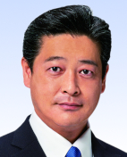

議員プロフィール
清水真人君（「しみず まさと」）
生年月日：1975/2/26
会派：自民
選挙区・比例区／当選年／当選回数：
選挙区（群馬県）選出／令和元年／当選 1 回
役職：令和7年4月17日現在
文教科学委員会（理）
議院運営委員会
北朝鮮による拉致問題等に関する特別委員会（理）
国民生活・経済及び地方に関する調査会（理）
任期：令和7年7月28日
プロフィール
昭和５０年２月２６日、群馬県高崎市生まれ○東京農業大学第二高等学校卒業、明治学院大学経済学部卒業○平成１５年、２８歳の時に高崎市議会議員に初当選（通算２期）、平成２１年高崎市議会副議長○平成２３年群馬県議会議員初当選（通算２期）○令和元年７月の第２５回参議院議員通常選挙で初当選○国土交通大臣政務官【役職歴】○参議院においては、法務委員会、北朝鮮による拉致問題等に関する特別委員会の次席理事、議院運営委員会委員○自民党においては、参議院自由民主党副幹事長、党政務調査会内閣第二部会副部会長、党青年局顧問、党女性局、広報戦略局、地方組織・議院総局の次長、組織運動本部運輸・交通関係委員会副委員長など○政治信条は、「出来ること、するべきことを確実に」「摩頂放踵」 （令和４年１１月３０日現在）
動物占い結果
表面

希望

本質

意思決定
隠れ